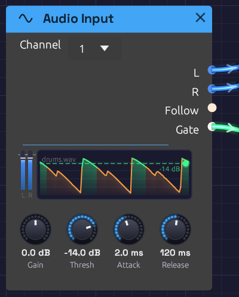

Audio Input
Module ID source.audio_input · Category Source

A drum loop coming in on input 1, with Channel on 1 so both meters carry it. Follow scrolls past the Threshold line, turning green wherever the gate opened: the kicks get through, the snares stay under.Audio Input brings sound from outside into the patch: a microphone, a guitar, a synth on a line input. Put your voice through the reverb, a guitar through the ladder filter and a tape delay, or let a drum loop play a synth.
Choose the device in the toolbar's Input menu. It starts at None, so Modular never opens a microphone you didn't ask it to. Every Audio Input module in the patch hears that one device; until you choose one, they're silent.
Alongside the audio, the module listens to how loud the input is. Follow traces the level as a control signal, and Gate opens when it rises above the Threshold, so a drum hit or a picked note can trigger envelopes.
Outputs
| Port | Signal Type | Description |
|---|---|---|
| L | Audio (Blue) | Input 1, after Gain; or, with Channel on 1 or 2, that input |
| R | Audio (Blue) | Input 2, after Gain; or, with Channel on 1 or 2, that input |
| Follow | Control (Orange) | How loud the input is, on a dB scale: 0 at -60 dB, 1 at full scale |
| Gate | Gate (Green) | High while Follow is above the Threshold |
The module has no inputs: its signal comes from the device.
Parameters
| Control | Range | Default | Description |
|---|---|---|---|
| Channel | Stereo, 1, 2 | Stereo | Which of the device's inputs the module hears, on a menu at the top of the node. See Choosing a channel |
| Gain | -24 – +24 dB | 0 dB | Level of the input, before everything else. Follow and Gate hear it too |
| Thresh | -60 – 0 dB | -30 dB | Where the gate opens |
| Attack | 0.1 – 100 ms | 5 ms | How fast Follow rises when the input gets louder |
| Release | 5 – 2000 ms | 150 ms | How fast Follow falls when the input gets quieter |
Choosing a channel
An audio interface hands its inputs over as a pair: input 1 on the left, input 2 on the right. That's right for a stereo source, like a synth's two outputs, but a guitar or a microphone plugged into input 1 alone would play only in your left ear, and a stereo delay or reverb after it would get a lopsided signal. Channel picks what the module hears:
| Channel | L hears | R hears | For |
|---|---|---|---|
| Stereo | input 1 | input 2 | A stereo source across both inputs, or a device with a single input (see below) |
| 1 | input 1 | input 1 | A guitar or microphone in input 1, heard in the centre |
| 2 | input 2 | input 2 | The same, in input 2 |
Follow and Gate hear what the module puts out. On 1 or 2 they follow that input alone. On Stereo they follow whichever side is louder.
Each Audio Input module chooses for itself, so two of them can split an interface: one on 1 for a guitar through a filter and an echo, one on 2 for a voice through a reverb, each in its own chain.
A device that has only one input, like a laptop's built-in microphone or a USB mic, already plays on both sides, whichever Channel you pick.
Only inputs 1 and 2 reach the patch. On an interface with more, like a Scarlett 18i20, plug what you want to play into the first two.
The display
On the left, two slim meters show the input's peaks after Gain, on the same scale as the Audio Output meter. Hover them for the levels in dBFS. Set Gain so your loudest playing stays out of the red.
On the right, the last three seconds of Follow scroll past, newest at the right edge. The Threshold lies across them as a dashed green line, and the trace turns green wherever the gate was open, so you can see which hits got through. Drag the line up or down to move the Threshold; the lamp at its end lights while the gate is open.
The name of the device it's listening to sits faintly in the corner.
Follow and Gate
Follow is an envelope follower: it rises with the input's peaks at the Attack speed and falls back at the Release speed. Its scale is in decibels, not raw level. A whisper and a shout are 40 dB apart, which is a hundredth to one in raw level but 0.3 to 1 in Follow, so quiet and loud playing both move what it's patched to.
Short Attack times catch the front of a drum hit. Longer ones, 20–50 ms, smooth out the fast wiggles of a voice. Release sets how long Follow hangs on after a sound stops: around 100 ms for a tight pumping effect, a second or more for a slow swell.
Gate opens when Follow rises above the Threshold, and closes again only once Follow falls 6 dB below it. That gap stops the gate chattering open and shut when the level hovers right at the threshold. Because the gate follows Follow, a longer Release also holds the gate open longer.
Latency and devices
Live input passes through two devices, each with its own clock and buffer: the input and the output. To keep the sound smooth, Modular holds a little audio between them, about one buffer of each. While an input is open, the status bar shows In and the round trip: how long a sound takes from the input jack to the speakers, often around 60 ms on Windows. Hover it for the parts that add up to it, then the device and any dropouts so far. It turns amber for a few seconds after a dropout, or after a glitch the device itself reports (a lone one when the input first opens is common, and harmless).
| Part | Typical (Windows) | What it is |
|---|---|---|
| Input device | ~10 ms | The input device's own buffer: audio waits there until a packet is full |
| Buffer | ~13 ms | What Modular holds between the two devices to ride out their uneven timing, once settled |
| Output device | ~30 ms | The output device's own buffer and the Windows audio engine behind it, before the speakers play it |
| Limiter | 1 ms | The Audio Output limiter's look-ahead |
Each device's figure comes from the timestamps it puts on its audio. Windows doesn't time captured audio usefully, so there the input is counted as one packet, the least it can be, and the hover marks it with ~. If a device reports nothing at all, the label gets a + (In 22+ ms): the real round trip is longer than the parts Modular can count. Neither figure includes the converters inside the interface, usually another millisecond or two each way.
The Buffer settles on its own. It opens holding enough for the worst timing the two devices could have, then over the first few seconds it watches how much of that they really need, and trims the rest, a frame at a time so you don't hear it. If the two devices' clocks drift apart, as separate devices' do, it eases a block a fraction faster or slower to keep in step rather than letting the audio drop out. After a dropout it holds a little more, then tries the leaner amount again after a quiet half minute. The hover shows how much it has trimmed and stretched.
- Different sample rates are fine. Windows often runs a microphone at 48 kHz and speakers at 44.1 kHz, even on one interface. Modular converts the input to the output's rate on the way in. For the cleanest sound, set both to the same rate in your system's sound settings; the status bar tooltip says when it's converting.
- Changing the Output device reopens the input at the new device's rate.
- If the input device is unplugged, the status bar shows ⚠ Input lost. Choose it again under Input.
- A mono device is heard on both sides. With a two-input interface, set Channel to the input you're using; see Choosing a channel.
Low latency with ASIO (Windows)
 ASIO is a registered trademark of Steinberg Media Technologies GmbH
ASIO is a registered trademark of Steinberg Media Technologies GmbHWindows Audio is shared by every app, and each direction passes through the Windows audio engine: fine for a pad or a sampled loop, but a guitarist hears 60 ms as a slap-back echo of their own playing. An audio interface's ASIO driver skips all of that. Input and output come from one driver, on one clock, in buffers a few milliseconds long, and Modular holds nothing between them: each output buffer is computed from the input that arrived moments before.
To use it, download the low-latency Windows build, or build Modular with ASIO yourself (both in Build with ASIO), then open the Output menu and choose ASIO under Audio system. The menu then lists ASIO drivers, and Input offers that driver's inputs. Choose it there to hear your interface.
Buffer sets how many frames the driver hands over at a time, and the closed Output menu shows it beside the driver's name:
| Buffer | At 48 kHz | Round trip, measured | |
|---|---|---|---|
| 32 | 0.7 ms | 11 ms | The quickest; needs a computer with headroom |
| 64 | 1.3 ms | 14 ms | Tight enough to play guitar against |
| 128 | 2.7 ms | 20 ms | A good start: feels immediate for most playing |
| 256 | 5.3 ms | 32 ms | Busy patches with long reverbs |
| 512 | 10.7 ms | 52 ms | Room to spare; too slow to play against |
Measured on a first-generation Scarlett 2i2 with Focusrite's driver. The round trip is more than one buffer in and one out: each driver keeps a safety margin of its own, Focusrite's about another buffer and a few milliseconds each way, and Modular's limiter adds 1 ms. The status bar's In shows yours. If you hear crackles, or the CPU meter runs high, go up a size. Smaller buffers make Modular answer more often, with less time for each answer.
- ASIO drivers serve one app at a time. If another app (a DAW, say) has the interface, choosing ASIO says so and stays on Windows Audio.
- Changing the buffer from the driver's own control panel restarts audio at the driver's new size, with a note in the status bar.
- Modular remembers the audio system and buffer between sessions.
Feedback
A microphone near speakers hears the speakers. Through a reverb or a delay with feedback, that can build into a howl. The first time you turn on an input while the output is speakers, the status bar says so. Use headphones, or keep the volume low. If it does run away, the Audio Output's limiter keeps it from getting dangerously loud. Press ⏹ Stop to silence it.
Rendering and filming
The render tool has no input device, so Audio Input renders silence. Give it a WAV file to hear instead with --input:
cargo run --release --bin render -- my-patch.json out.wav --input voice.wav
The file plays from the start of the render. It must be at the render's sample rate (48 kHz unless you pass --sample-rate). In a capture script, the cue input voice.wav does the same from the moment it fires.
Patches
Voice in a room
[Audio Input L] ──> [Reverb In L]
[Audio Input R] ──> [Reverb In R]
[Reverb Out L] ──> [Audio Output Left]
[Reverb Out R] ──> [Audio Output Right]
Talk or sing into the microphone. If it's plugged into an interface, set Channel to its input, so it sits in the middle of the room rather than off to one side. Raise the Reverb's Size and Decay for a hall, or a cathedral. Use headphones.
Guitar through a ladder filter and tape echo
[Audio Input L] ──> [Ladder Filter In]
[Audio Input Follow] ──> [Ladder Filter Cutoff]
[Ladder Filter LP24] ──> [Stereo Delay In L] (Tape on)
[Stereo Delay Out L / Out R] ──> [Audio Output Left / Right]
Set Channel to the input the guitar is plugged into. Follow opens the filter as you dig in, like an auto-wah: each pick attack sweeps it up, and it closes as the note decays. Start with the Ladder's cutoff low and its Resonance around 50%. Attack at 5 ms and Release at 200 ms give a classic quack. The tape echo then repeats each sweep, darker every time.
Drums that play a synth
[Audio Input Gate] ──> [ADSR Gate] (Thresh just under the kicks)
[ADSR Out] ──> [VCA CV]
[Oscillator Out] ──> [VCA In] (Octave -2)
[VCA Out] ──> [Audio Output Mono]
Play a drum loop, or hit a table near the microphone. Drag the Threshold line until only the hits you want turn green, usually the kicks. Each one fires the envelope, and a sub-bass note follows the drummer. Give the ADSR a fast attack and a short decay for a tight thump, or patch the Gate into a Step Sequencer to step through a bassline in time with the playing.
Ducking a pad
[Audio Input Follow] ──> [Attenuverter In] (Amount -1, Offset 1)
[Attenuverter Out] ──> [VCA CV]
[Pad] ──> [VCA In]
The louder the input, the quieter the pad: it dips under each word and swells back in the gaps. That's the sidechain pumping of dance music, played by a voice or a drum loop.
Related modules
- Reverb and Stereo Delay: put the input in a space
- Ladder Filter and SVF Filter: shape it, with Follow on the cutoff
- ADSR Envelope: triggered by Gate
- Compressor: evens out a voice or a guitar
- Audio Output: its limiter catches feedback